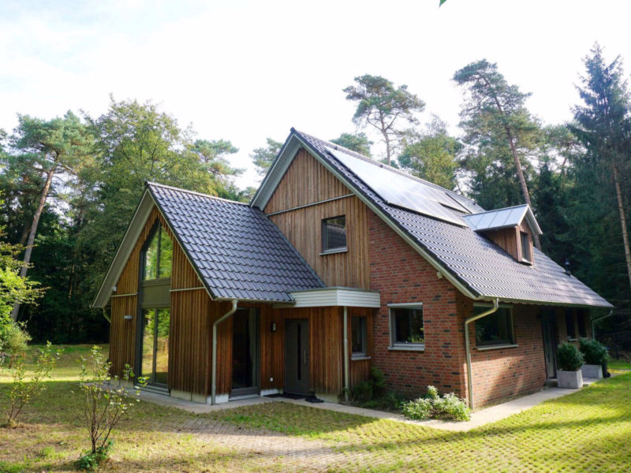
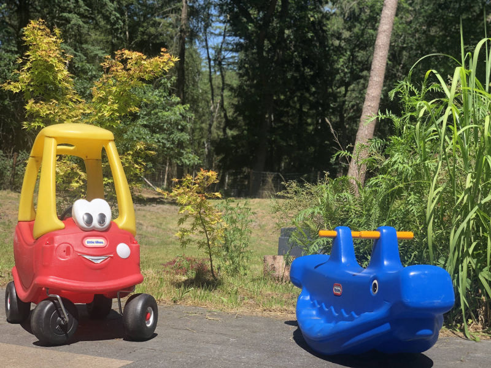
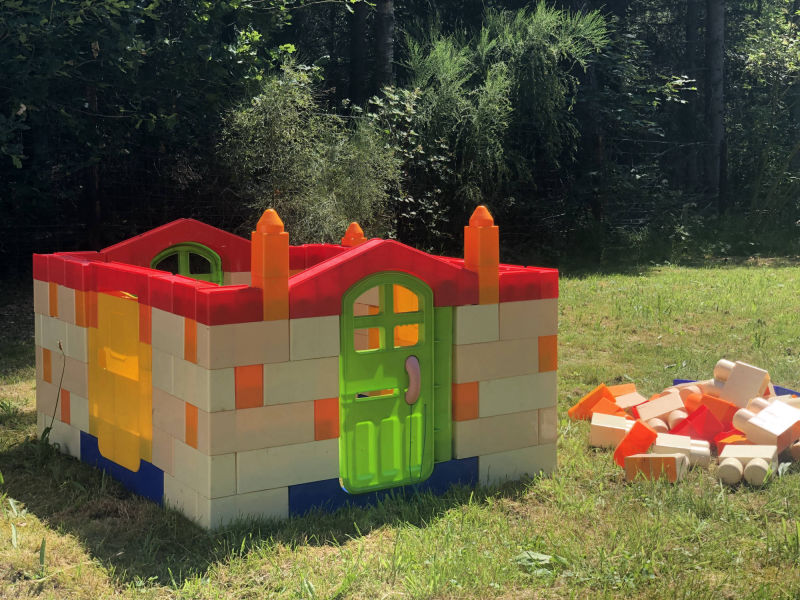
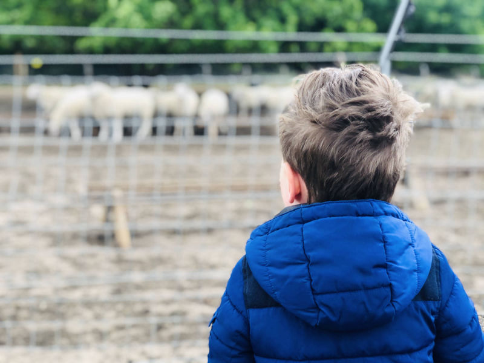

Gelegen in een prachtige bosrijke omgeving aan de rand van Harderwijk bent u van harte welkom bij gastouderopvang De hertjes! Een professionele gastouderopvang met veel ruimte op een unieke locatie.
Mijn naam is Alletta van de Sande, 28 jaar en ik woon samen met mijn man en dochter aan de rand van Harderwijk in het Leuvenumse bos. Anderen omschrijven mij als zorgzaam, geduldig, zelfstandig, creatief en gestructureerd. Stil zitten vind ik lastig, ik ben een echte doener. Mountainbiken, wandelen of boulderen is iets wat ik graag doe en geeft mij rust en ontspanning.
Werken met kinderen heeft mij altijd aangesproken. Zo paste ik in het verleden graag op de buurtkinderen en heb ik in 2010 de opleiding Onderwijsassistent MBO 4 afgerond. Ik heb graag zelf de touwtjes in handen en zo ben ik terecht gekomen in de kinderopvang. Dit heb ik met veel plezier ruim zes jaar gedaan, waarbij ik voornamelijk werkte op groepen met kinderen van 0-4 jaar.
Sinds wij beschikken over een ruim huis met een grote tuin, kon ik de volgende stap zetten, namelijk voor mijzelf beginnen als gastouder. De groepsgrootte is kleiner, waardoor je intensiever en persoonlijker contact hebt met de kinderen als ouders. Je leert de kinderen écht kennen en je kunt hierdoor passende activiteiten aanbieden. "Samen jezelf worden" is dan ook mijn slogan. Iedere maand is er een nieuw thema waar we aan werken. Zo blijft het leerzaam en uitdagend bij gastouderopvang De hertjes!
Uiteraard voldoe ik aan alle wettelijke eisen om gastouder te mogen zijn:
- LRKP geregistreerd (u kunt kinderopvangtoeslag aanvragen)
- Een geldig diploma (Onderwijsassistent MBO 4)
- Kinder EHBO
- Geldig Verklaring Omtrent Gedrag
Aan de rand van Harderwijk in het Leuvenumse bos bevindt zich gastouderopvang De hertjes. Wij beschikken over een grote omheinde tuin met divers buitenspeelgoed, een speeltoestel en een bakfiets om op een veilige manier op pad te kunnen gaan naar bijvoorbeeld dierenweide Sonnevanck, de schaapskooi in Ermelo of picknicken op de zandverstuiving. Ook natuurspeelterrein Watertorenweg is voor ons goed bereikbaar om heerlijk te ravotten.
Binnen is er ook veel ruimte om te kunnen spelen. Een ander voordeel is dat de slaapkamer voor de kinderen zich op de begane grond bevindt. Op deze manier kan ik meer overzicht houden op de rest van de groep en worden signalen sneller opgepikt.
Ons huis is gunstig gelegen dankzij de verschillende uitvalswegen. Zo rijd u vanaf ons huis binnen 5 minuten al op de snelweg!
Leuvenumseweg 115
3847LB Harderwijk
Gastouderopvang De hertjes biedt opvang aan voor kinderen van 0-4 jaar. Doordat gastouderopvang kleinschalig is, namelijk niet meer dan 4 a 5 kinderen op de groep, en er iedere dag een vast gezicht is, is er meer ruimte voor individuele aandacht en activiteiten op maat die het verdient. Een kind kan in alle rust binnen een kleine, overzichtelijke groep spelen.
Het geluidsniveau bij een gastouder is aanzienlijk lager dan bij een kinderdagverblijf. Een hoog geluidsniveau en de aanwezigheid van veel mensen in één ruimte zijn nadelig voor het emotioneel en fysiek welbevinden van jonge kinderen. Dit levert meer stress op, zoals een hogere bloeddruk en hartslag en een hoger niveau van het stresshormoon cortisol.
Kinderen die naar een gastouderopvang gaan zijn minder vaak ziek dan op een kinderdagverblijf. Onderzoek van het RIVM en het Universitair Medisch Centrum Utrecht heeft aangetoond dat een kind bij een gastouder tot 70% minder ziek is dan op het kinderdagverblijf. Dit onderzoek toont ook aan dat een kind die op jongere leeftijd vaker ziek is geweest geen hogere weerstand heeft opgebouwd op latere leeftijd.
Kinderen in de gastouderopvang hebben een hoger welbevinden dan kinderen op het kinderdagverblijf, blijkt uit onderzoek van de Universiteit van Leiden. Zij voelen zich meer op hun gemak en genieten meer van de activiteiten waar zij mee bezig zijn. Dit komt doordat zij in een kleinere groep worden opgevangen, het geluidsniveau lager is en doordat je als gastouder sensitiever bent. Hierdoor onwikkelt het kind zich beter.
De hertjes is geopend van maandag t/m donderdag van 07.00-18.00 uur.
Op onderstaande erkende feestdagen is Gastouderopvang De hertjes gesloten. Indien er op een van deze dagen opvang plaats zou vinden, hoeft u deze uren niet door te betalen. Op de overige feestdagen is de opvang wel geopend.
Gesloten:
Nieuwjaarsdag
Tweede Paasdag
Koningsdag
Bevrijdingsdag
Eerste Kerstdag
Tweede Kerstdag
Belcantodreef 47
3845 GW Harderwijk
06-47049585
harderwijk@viaviela.nl
www.viaviela.nl
Hoefbladmeen 1a
3844VL Harderwijk
Telefoon: 0341-410242
info@welkomkindharderwijk.nl
www.gastouder-harderwijk.nl
Leuvenumseweg 115, 3847LB Harderwijk
KVK: 73636126
Registratienummer LRK: 182217218
Tel: +31623039354
Email: info@dehertjes.nl